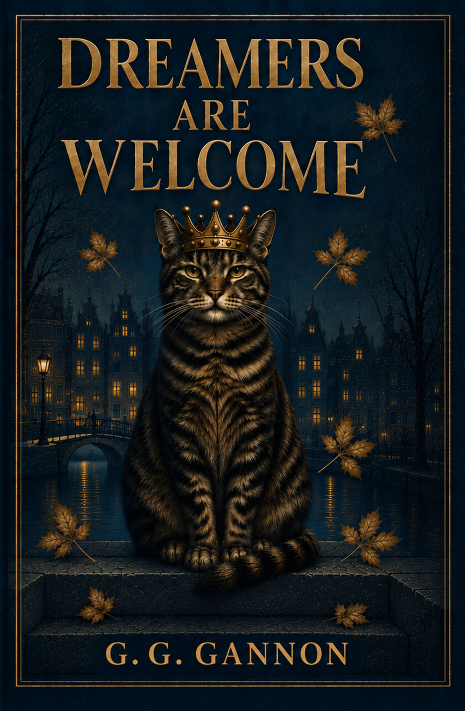

Dreamers are Welcome ... but Fantasists Beware!
Elizabeth Van Erbel and Granda have spent years together in an Amsterdam canal house, mistress and housekeeper bound by habit, history and a devotion neither would dream of admitting.
Then, on the morning Elizabeth becomes a widow, a bloodied newborn kitten appears on their steps.
She calls him Leopold, after her husband.
Soon the peculiar little cat is presiding over the house like royalty, and Elizabeth throws him a party, then another, drawing an ever more extraordinary collection of people through their door. For Leopold seems to recognise something in the people he meets – something they might rather keep hidden.
As old loves return and secrets surface, Elizabeth and Granda find their carefully ordered lives opening in ways neither could have imagined.
But not everyone is enchanted. Every remarkable cat needs a nemesis.
Funny, strange and outrageous,
Dreamers Are Welcome is a story of grief and ageing, outsiders and second chances, the families we inherit and the ones we create – and one extraordinary cat who may understand considerably more about human beings than they understand about themselves.